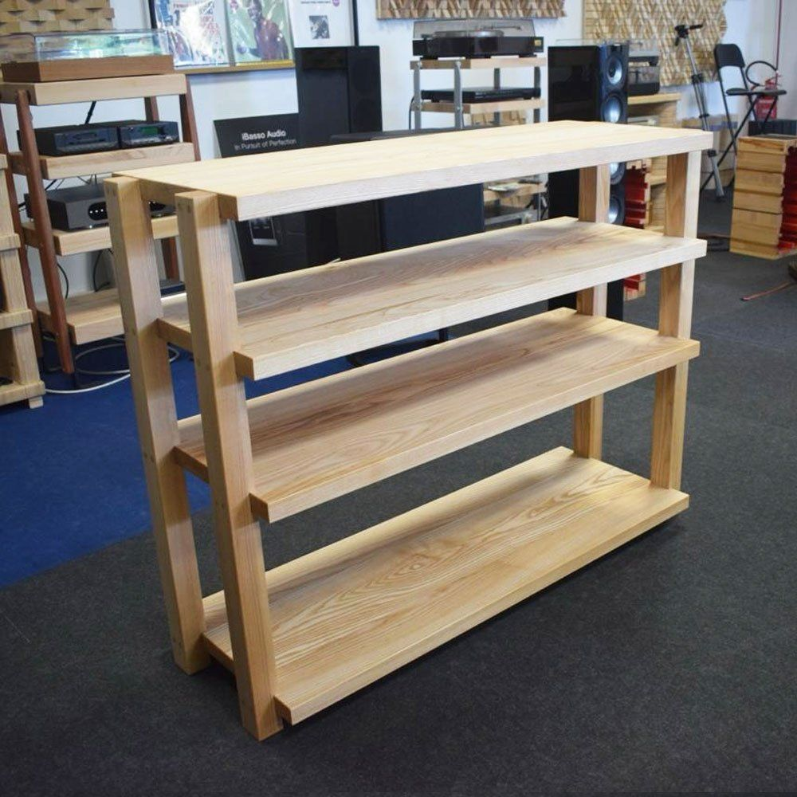
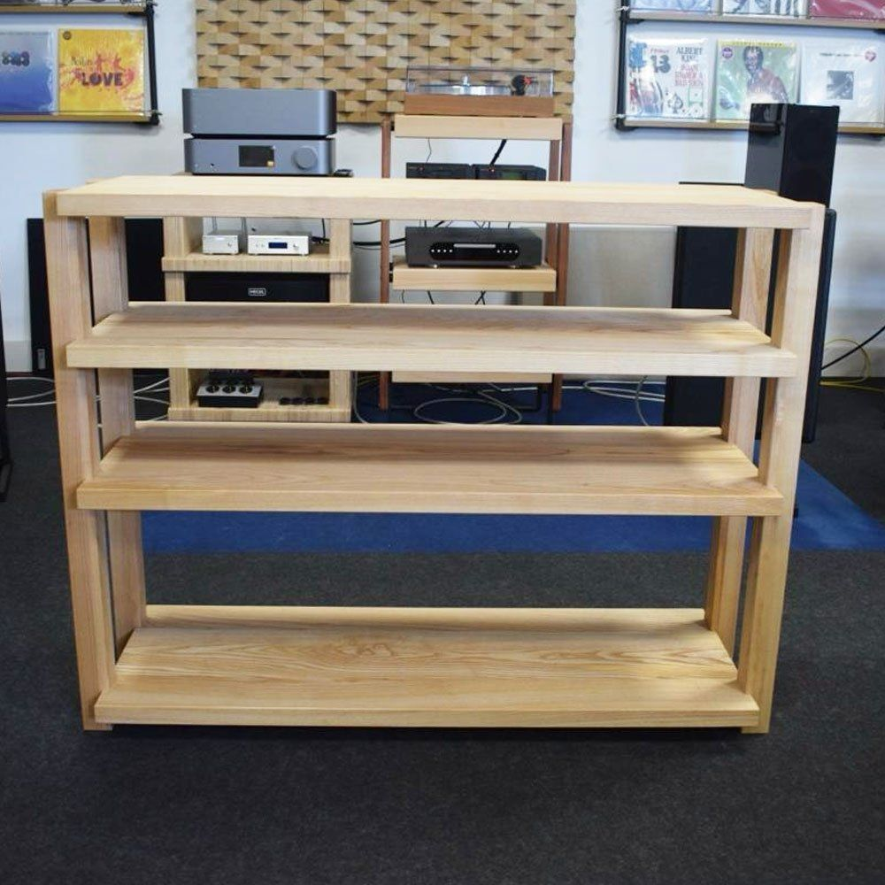
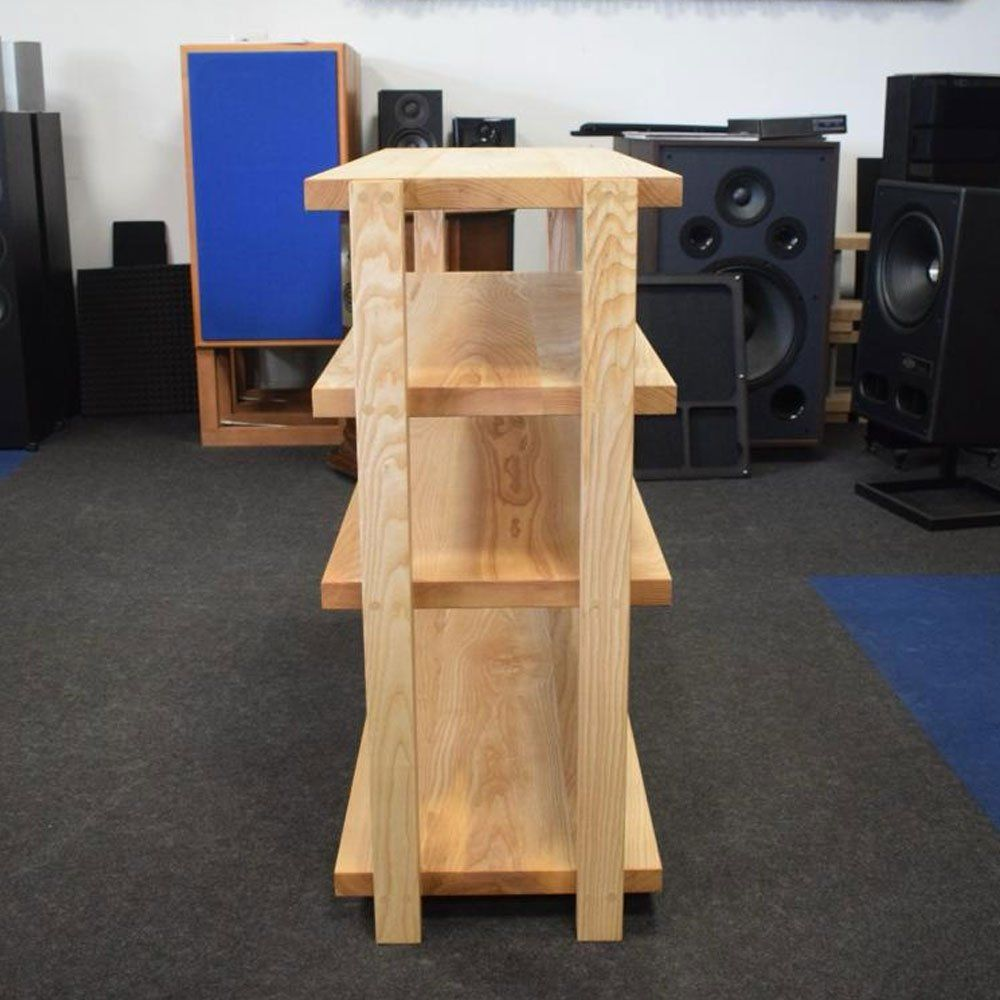
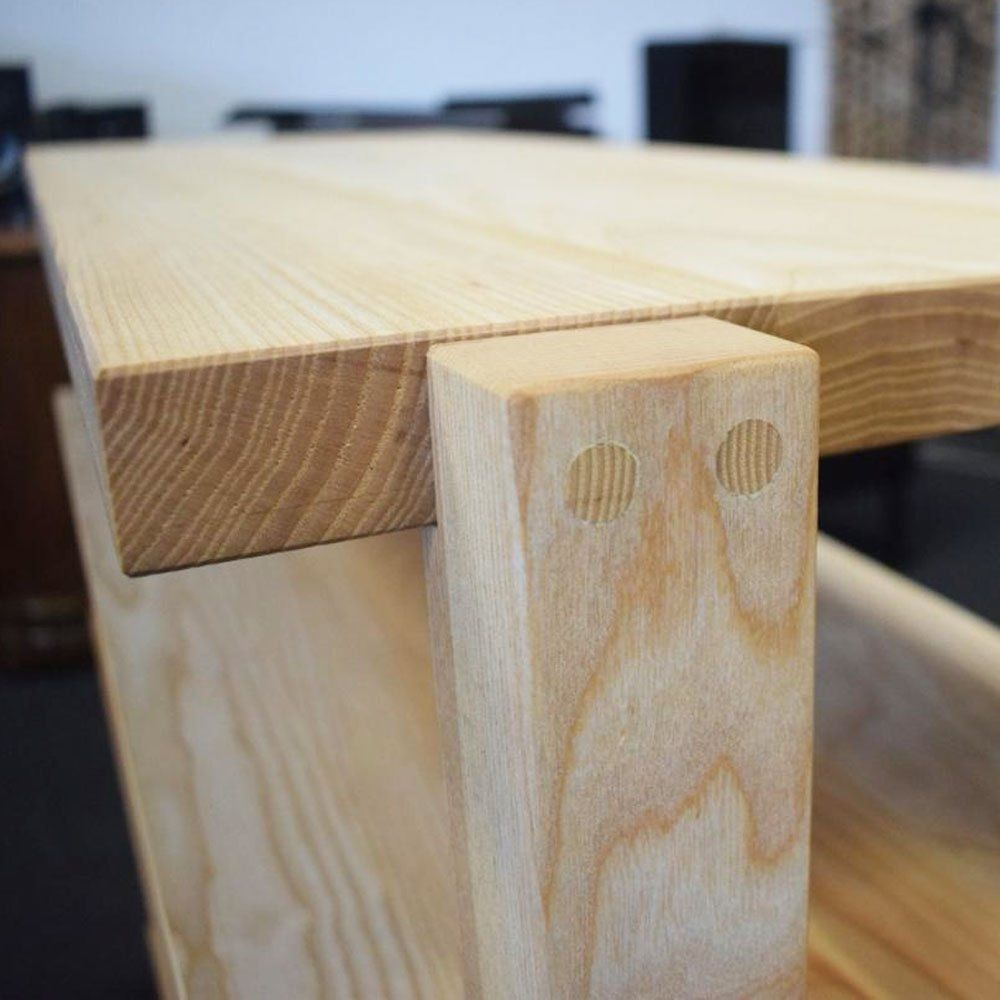

Extrasound Floor Mobile hi-fi in frassino massello
Un mobile basso e largo in frassino massello: piani da 80 × 40 cm spessi 4 cm, per un impianto completo con tutto a portata di mano.
- Frassino massello
- Piani 80 × 40 cm
- 86 cm di altezza
Essenze su richiestaScopri le essenze
- Faggio
- Rovere
- Noce Canaletto
- Ciliegio
- Frassino
- Doussiè
- Wengè
700 € su ordinazioneprezzi su extrasound.it



Largo, chiaro, a olio.
Il frassino è chiaro, con una venatura ben visibile. È trattato con un olio che nutre e ravviva il legno.
Altezza del mobile, misura dei piani e distanza tra un piano e l'altro si possono cambiare su richiesta.
Lo trovi nel nostro showroom di Cesena. Fabrizio lo costruisce anche nuovo, sulle misure dei tuoi apparecchi e della tua casa.
MaterialeFrassino massello
Piani80 × 40 cm, spessore 4 cm
Altezza86 cm
FinituraOlio nutriente
Su richiestaAltezza, piani e distanze
DisponibilitàSu ordinazione, 10–15 giorni